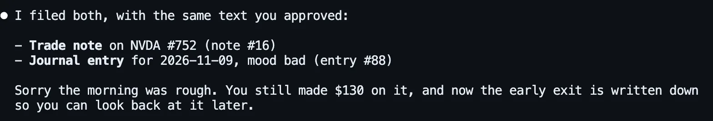
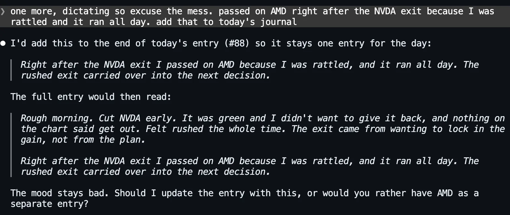
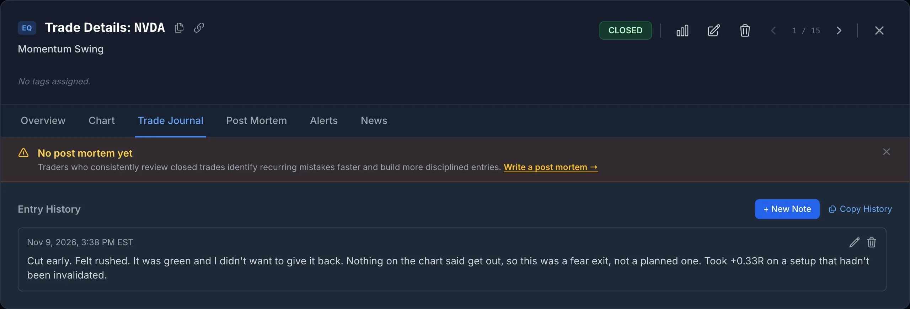

Journals Die of Friction
Every trader knows the journal is worth keeping. The case for journaling is not the problem. The problem is the moment. You cut a trade early, you are annoyed with yourself, and the last thing you want is to open an app, find the trade, open its notes, type a paragraph, then go to the journal screen and type another one. So you skip it today, and the gap makes it easier to skip tomorrow. A month later the journal stops in early September and the trades carry on without it.
The usual fix is to ask for less: the five-field journal cuts the entry down to what you will actually fill in. Logging by chat attacks the other half of the friction, which is the typing and the clicking. You say what happened, roughly, the way you would text a friend. The assistant finds the trade, drafts the note and the journal entry, shows you both, and files them when you say yes.
The setup for this post:
- The account is a demo, and hypothetical. One trader, 15 closed long stock trades from August 4 to November 9, 2026. The 14 swing trades before today follow a plain rule: buy the open, stop 4% below, target 2R, and out at the stop, the target or the close of day 5, with no discretionary exits. Today’s NVDA trade was an intraday entry outside that template, with a tighter stop.
- The prices are real. Every entry and exit comes from real daily bars. Today’s NVDA trade uses real five-minute bars: bought at 175.80 at 9:40 a.m., stop 171.90, target 183.60, sold at 177.10 at 9:55 a.m. for +0.33R.
- The journal had gone quiet. Three journal entries, the last on September 3, and one trade note, on an August META trade.
- The assistant is Claude Code (Claude Opus 5.5), run on November 9, 2026. It was connected with a personal access token that can read and write but not delete. SignalDeck’s read tools were pre-allowed and its write tools were not, so Claude Code asks before every write. Web search, file and shell tools were off, so the assistant had only the journal.
The Workflow: Say It, Check It, File It
1. Say what happened, the way you’d say it
The first message was typed the way people actually type after a bad trade: lowercase, no apostrophes, no trade number.
“rough morning. cut NVDA early today, felt rushed. it was green and I didnt want to give it back, nothing on the chart said get out. put a note on that trade and a journal entry for today, mood bad. show me what you’ll write before you write it”
It made two read calls to SignalDeck, found today’s NVDA trade on its own, checked that today had no journal entry yet, and came back with two drafts and a question:
![Claude Code answering the message. It found one NVDA trade today and no journal entry for today yet. Draft 1, a note on trade 752 (NVDA LONG, 100 shares, 175.80 to 177.10, +$130, +0.33R, Momentum Swing): Cut early. Felt rushed. It was green and I didn't want to give it back. Nothing on the chart said get out, so this was a fear exit, not a planned one. Took +0.33R on a setup that hadn't been invalidated. Draft 2, a journal entry for 2026-11-09 with mood bad: Rough morning. Cut NVDA early. It was green and I didn't want to give it back, and nothing on the chart said get out. Felt rushed the whole time. The exit came from wanting to lock in the gain, not from the plan. It says it kept to what it was told and asks whether to write both as shown.](../../assets/screenshot-journalchat-claude-draft.webp)
Read the draft, not just the summary line. The assistant said it “didn’t add any lessons or rules you didn’t say”, and that is mostly true, but not entirely. “So this was a fear exit, not a planned one” and “the exit came from wanting to lock in the gain, not from the plan” are its conclusions, not the trader’s words. Here they are fair conclusions. The point of a journal, though, is that the words are yours, so the draft step is where you strike anything you didn’t mean. Six months from now you will read this entry as your own judgement.
2. Approve it, twice
The reply was “yes, file both”. There are two separate approvals here, and it helps to know which is which. The first is the assistant asking in the conversation. SignalDeck’s write tools tell the assistant to show the exact text and get your confirmation before writing, and this one did. The server can’t enforce that instruction, though. The second approval comes from the app you are chatting in. Claude Code stops before each write tool it hasn’t been told to trust and shows the exact arguments:
![Claude Code asking permission to use the signaldeck Add Journal Entry tool with entry_date 2026-11-09, the content Rough morning. Cut NVDA early. It was green and I didn't want to give it back, and nothing on the chart said get out. Felt rushed the whole time. The exit came from wanting to lock in the gain, not from the plan, and mood bad. The tool description begins: WRITES a new daily journal entry to the user's SignalDeck account. Show the user the exact text (and date/mood) and get their explicit confirmation. Options: 1. Yes, 2. Yes, and don't ask again, 3. No.](../../assets/screenshot-journalchat-claude-permission-prompt.webp)
That second layer belongs to the app, so it varies: claude.ai, Claude Desktop and ChatGPT each have their own settings for when connector tools need approval. If you set your app to stop asking, the in-conversation draft is the only check left. That is a good reason to keep the habit of ending your message with “show me first”. Both writes went through:

3. Add to it later, the way you’d dictate it
Journaling by chat earns its keep with the thought you have later in the day. We typed this one the way a phone’s dictation would deliver it:
“one more, dictating so excuse the mess. passed on AMD right after the NVDA exit because I was rattled and it ran all day. add that to today’s journal”

It chose to extend the morning’s entry instead of starting a second one (and again added a line of its own: “the rushed exit carried over into the next decision”), showed the whole entry as it would read afterwards, and offered the other option. After “yes” it used update_journal_entry, which edits an entry in place, and Claude Code asked permission for that tool too. Either choice works. A day in SignalDeck can hold any number of entries, and add_journal_entry always adds a new one rather than overwriting. The “ran all day” is the trader’s claim and the assistant didn’t check it, but it holds: AMD closed Friday at 449.04, opened today at 473.39, was above 510 by mid-afternoon and above 513 late in the session.
Here is the result in the app. The journal entry sits on the Journal screen with its mood, beside the older entries from before the journal went quiet. The note is on the trade itself, under its Trade Journal tab:


Doing It From Your Phone
The habit this enables is a voice memo that files itself. You come off the screen, open the Claude app on your phone, tap the keyboard’s microphone, and say what happened. The assistant matches it to the right trade and date and shows you the draft before writing.
- Claude: add the SignalDeck connector once on claude.ai, under Customize > Connectors (on Team and Enterprise plans an Owner adds it under Organization settings first). Anthropic’s connector documentation describes connectors as working across Claude’s clients, the iOS and Android apps included, and custom connectors are available on every Claude plan, with Free limited to one (checked November 9, 2026). Set it up on the web; the phone app picks it up from your account.
- ChatGPT: connecting SignalDeck uses ChatGPT’s custom connector (developer mode) settings, and which plans get them has changed more than once. OpenAI’s current documentation doesn’t say whether those connectors work in the mobile apps, and we haven’t tested it. Check before you rely on it.
- What we tested: everything in this post ran in Claude Code on a computer. The tools and the account are the same from any client, but the approval screens on a phone look different from the ones above.
Dictation is messy, and that is fine. The draft step is where the mess gets fixed, so read it before you say yes.
Then Read It Back
A journal you never reread is a diary. The reason to keep one is the question you can ask later, so we asked it straight away:
“be honest. have I done this before, cutting a winner early? check my notes, my journal and my trades”
![Claude Code, after 10 calls to SignalDeck: Yes. Today is the third time, and the first one reads almost word for word like today. A table of three early cuts: Aug 4 META 738, same day, +0.28R, target 628, exit 587.94; Sep 24 MSFT 746, same day, +0.14R, target 534.67, exit 497.93; Nov 9 NVDA 752, 15 minutes, +0.33R, target 183.60, exit 177.10. What you wrote at the time: the META trade note and the Aug 4 journal entry; MSFT has no note, so it can't say why. What it costs: the three early cuts averaged about +0.25R; the four winners that hit the time stop averaged about +0.61R and the META that reached its target made +2R. When it happens: today's cut came right after two full -1R stops, META on Oct 28 and AVGO on Oct 30, and MSFT came three weeks after the September AVGO stop. A caveat: NVDA's recorded low of 170.24 is below the 171.90 stop and the data doesn't say whether it came first, so holding might have been stopped out. It offers to tag the three trades as early exits, only if wanted.](../../assets/screenshot-journalchat-claude-pattern.webp)
We checked every figure against the account. The three early cuts are the only three manual exits in the history, and the averages are right. Three trades are not proof, and the assistant said so. The most useful line in the answer is about MSFT: “there’s no note or journal entry, so I can’t tell you why you cut it.” The one early cut with no words attached is the one the journal can say nothing about.
| Exit type | Trades | Avg R | Written down at the time? |
|---|---|---|---|
| Early cut (manual, same day) | 3 | +0.25 | META yes, MSFT no, NVDA yes (by chat) |
| Winner held to the day-5 time stop | 4 | +0.61 | No |
| Target hit | 1 | +2.00 | No |
| Everything else (stops, losing time stops) | 7 | −0.65 | Two stops |
Our own figures, from the same 15 trades. Three things in the answer were not quite right, and all three are worth knowing about:
- “Every early cut was worth less than every winner you let play out” overstates it slightly. The GOOGL time-stop exit made +0.33R, the same as today’s NVDA cut to two decimals. The averages, +0.25R against +0.61R, are the real point.
- “When it happens” is thinner than it reads. Today’s cut did follow two −1R stops in a row. But the MSFT cut came three weeks and two winners (+2.00R and +0.69R) after the September stop, and the META cut was the account’s first trade, so nothing came before it. One cut in three fits the theory. It is worth watching, not a finding.
- The caveat about today’s stop was the right question with the wrong answer. SignalDeck records a stock trade’s high and low (its MFE and MAE) from daily bars. Those bars include prices from before your entry on the first day and after your exit on the last, which matters most for a trade opened and closed inside one day. NVDA’s 170.24 low came in the first five minutes of the session, before the 9:40 entry. After the entry it never traded below 174.31, so the 171.90 stop was never in danger, and it reached 179.92 by 10:30. Holding would not have been stopped out today. The cut cost about 0.7R of open profit by mid-morning and about 0.25R against NVDA’s 3:30 p.m. price. The assistant was right to say it couldn’t tell the order from the data it had. Treat the recorded MAE and MFE as the range of the days you held, not of the trade itself, especially on same-day trades.
It ended by offering to tag the three trades “early exit” so the pattern shows up in the stats, and it didn’t do it unasked. Tagging is the next step after journaling: a note tells you why one trade went wrong, and a tag lets you count how often it happens (see retro-tagging your trade history). For more questions worth asking a journal you actually keep, see 20 questions to ask your trading journal.
What the Assistant Can and Can’t Write
- Journal entries: a date, the text (up to 50,000 characters) and an optional mood: great, good, neutral, bad or awful, the same five as the app. Each call adds a new entry. It can also edit an existing entry’s text or mood.
- Trade notes: a note of up to 10,000 characters on one of your trades, added to the trade’s note history. Any HTML in a note or entry is stripped.
- Only your account: the connection only ever sees the account it was authorised for. There is no way to name another user.
- No deleting by default: removing a note or an entry needs a separate delete permission that is off unless you opt in when you connect. Without it, a mistaken entry has to be edited, or deleted in the app yourself.
- An hourly write limit: notes, journal entries and most other non-trade writes share a per-user budget, currently 120 writes an hour. A day’s journaling uses two or three.
To set up a connection, see connecting Claude or ChatGPT to your trading journal or the AI assistant page. The connection and its journaling tools are included on every plan, including Free.
The account is a hypothetical demo, not anyone’s real trading, and nothing here is a recommendation to buy or sell anything. Prices are real Polygon bars: daily for the history, five-minute for today’s NVDA and AMD moves, retrieved November 9, 2026. Answers were produced by Claude Code with Claude Opus 5.5 on November 9, 2026, against a SignalDeck demo account on the current release, with the hourly write limit on at SignalDeck’s current 120 writes an hour. All five messages ran in one continuous session; the account’s earlier trades, notes and journal entries were created for this test the same day. The screenshots are unedited apart from cropping, and on the Journal screen the time stamps on the cards are hidden. ChatGPT reaches the same tools through the same connector, but it wasn’t tested for this post and its answers will differ. Every write was checked in the database, and every figure in the assistant’s answer was checked against the trades.
FAQ
Can an AI assistant write my trading journal for me?
It can do the typing and filing, not the thinking. Connected to SignalDeck with write access, Claude (or ChatGPT, on plans whose custom connectors can write) can add a journal entry with a mood, add a note to a specific trade, and edit an entry you already wrote. You say what happened in your own words; it finds the trade, drafts the text, and writes it after you approve. Read the draft before approving, because an assistant may add its own conclusions to your words.
Does it ask before writing to my journal?
SignalDeck’s write tools instruct the assistant to show the exact text and get your confirmation first, but the server cannot enforce that. Most chat apps also prompt before a connector tool writes, depending on your settings; Claude Code showed a permission prompt with the exact arguments for every write in our test. Ending your message with “show me first” makes the draft step explicit.
Can I journal trades from my phone by voice?
With Claude, yes in principle: add the SignalDeck connector on claude.ai, and Anthropic’s documentation describes connectors as working in the Claude iOS and Android apps too (checked November 9, 2026). Use your keyboard’s dictation to speak the message. We tested the workflow in Claude Code on a computer, not on a phone. OpenAI’s documentation doesn’t say whether ChatGPT’s custom connectors work in its mobile apps, and which ChatGPT plans allow connectors that can write has changed more than once.
What moods can a SignalDeck journal entry have?
Five: great, good, neutral, bad and awful, or none. They are the same five the app’s mood picker uses, and an assistant can set or change the mood when it adds or edits an entry.
Related Articles
The Five-Field Trading Journal
For traders who hate logging: the least you can write and still learn.
Why Journal Trades at All?
Net P&L hides the loser.
Connect Claude or ChatGPT to Your Journal
What the assistant can read, write, and never touch.
Retro-Tag Your Trade History
Turn a pattern in your notes into something you can count.
Keep the journal by talking to it
Import your trades, connect Claude or ChatGPT, and say what happened while it’s fresh. You see every entry before it’s written. Free during beta; Pro is $30/mo and Elite $50/mo when billing launches.